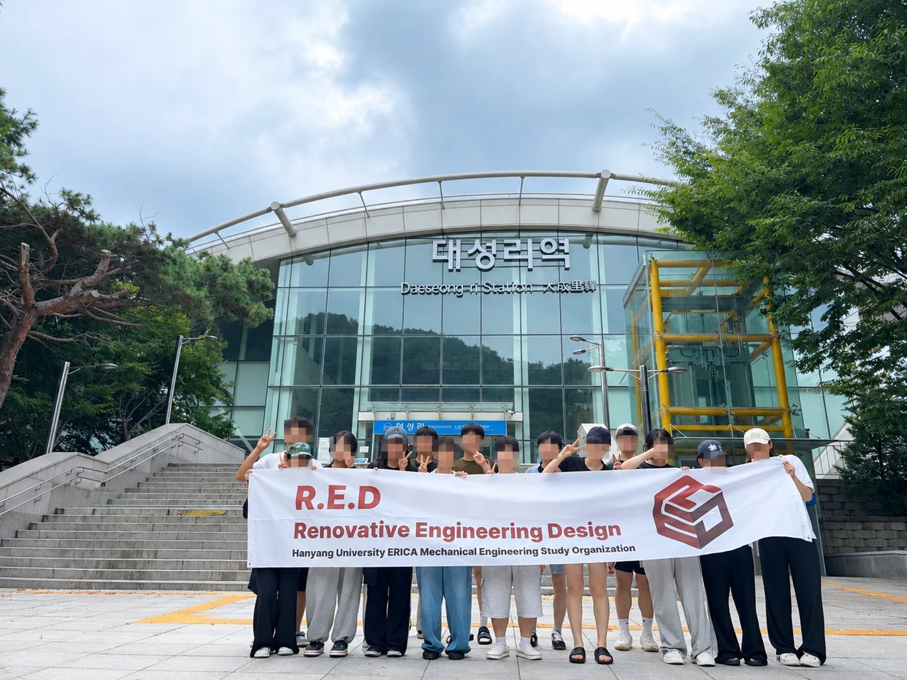
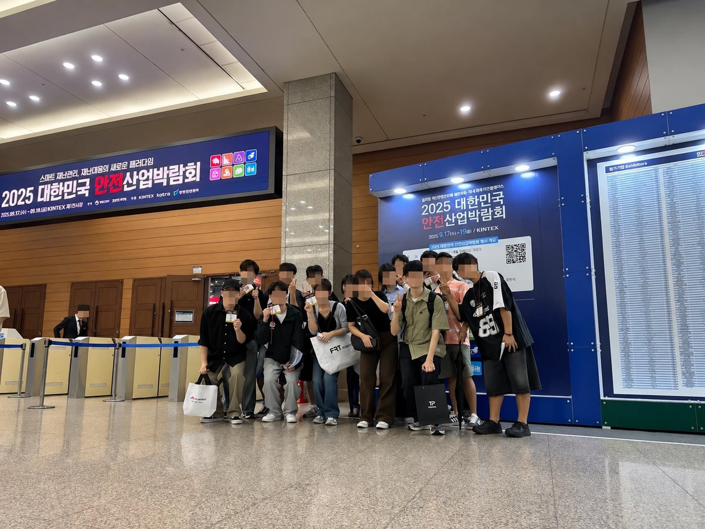
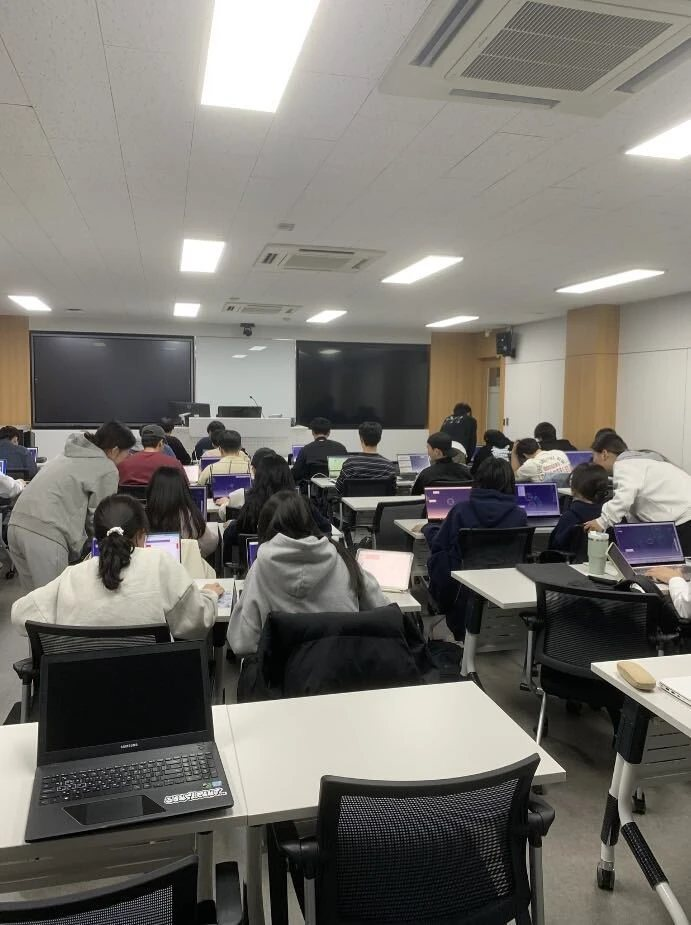
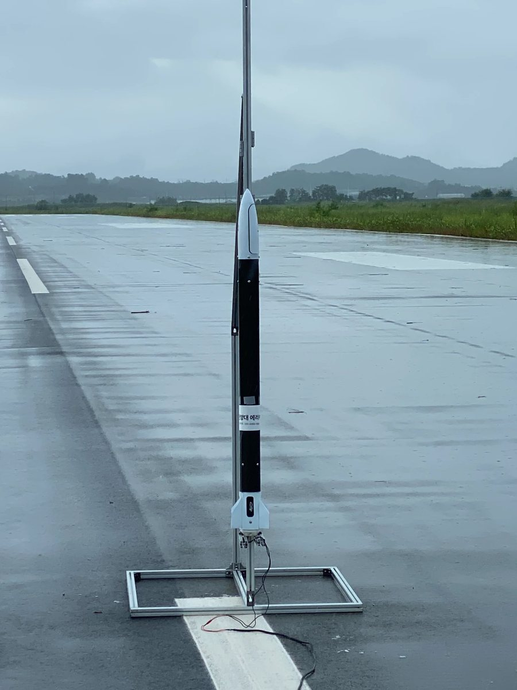
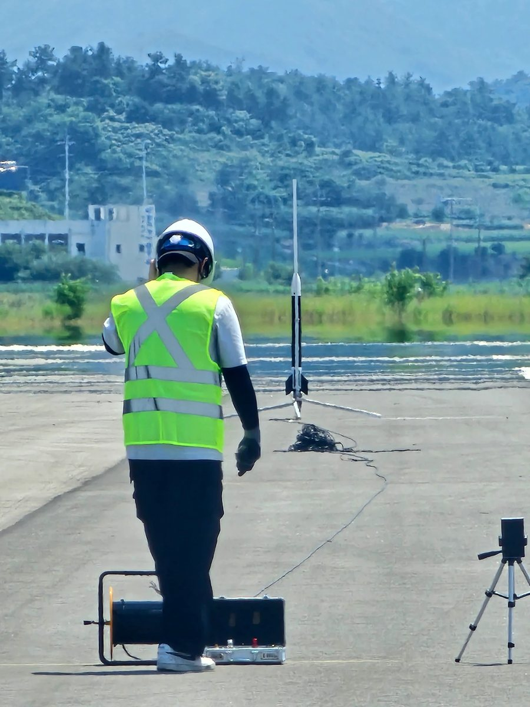

<!doctype html>
<html lang="ko">
<head>
<meta charset="utf-8">
<meta name="viewport" content="width=device-width, initial-scale=1">
<title>기계공학과 홈페이지 Demo</title>
<link rel="preconnect" href="https://cdn.jsdelivr.net" crossorigin>
<link rel="preconnect" href="https://images.unsplash.com">
<link rel="stylesheet" href="https://cdn.jsdelivr.net/gh/orioncactus/pretendard@v1.3.9/dist/web/variable/pretendardvariable-dynamic-subset.min.css">
<link rel="stylesheet" href="style.css?v=235">
</head>
<body>
<div id="header"></div>
<div class="subhero"><div class="wrap">
  <div class="crumb" id="crumb"></div>
  <h1 id="ptitle"></h1>
  <nav class="subtabs" id="subtabs"></nav>
</div></div>
<main class="wrap pg" id="content"></main>
<div id="footer"></div>

<script src="data.js?v=235"></script>
<script src="common.js?v=235"></script>
<script>
// 내용 출처: 현행 mech.hanyang.ac.kr (학과소개 -26-, 인사말 -27, 연혁 -29, 방문안내 -31, 교과과정 -19/-14, 학생회 -23, 장학 -32/-33, 사업단 -13, 리서치프로파일 -30)
const q = new URLSearchParams(location.search);
let m = Math.min(+q.get('m') || 0, MENU.length - 1);
let menu = MENU[m];
let s = Math.min(+q.get('s') || 0, menu.subs.length - 1);
renderHeader(menu.name);
renderFooter();
function paintHead() {
  document.title = `${menu.subs[s][0]} · 기계공학과 홈페이지 Demo`;
  document.getElementById('crumb').textContent = `홈 › ${menu.name} › ${menu.subs[s][0]}`;
  document.getElementById('ptitle').textContent = menu.subs[s][0];
  document.getElementById('subtabs').innerHTML = menu.subs.map(([n], k) => `<a href="${subHref(m, k)}" class="${k === s ? 'on' : ''}">${n}</a>`).join('');
}
paintHead();

const fieldName = id => FIELDS.find(f => f.id === id).name;
const H = t => `<h3 class="cl-h">${t}</h3>`;
const P = x => `<p class="cl-p">${x}</p>`;
const TOP = (k, h) => `<div class="ab-top"><span class="ab-k">${k}</span><h2>${h}</h2></div>`;
const link = (label, url, sub = '') => { const ext = /^https?:/.test(url); return `<a href="${url}"${ext ? ' target="_blank" rel="noopener"' : ''}><span><b>${label}</b>${sub ? `<small>${sub}</small>` : ''}</span><i>${ext ? '↗' : '→'}</i></a>`; };
const LINKS = (...a) => `<div class="cl-links">${a.join('')}</div>`;
const ROWS = r => `<dl class="cl-dl">${r.map(([k, v]) => `<dt>${k}</dt><dd>${v}</dd>`).join('')}</dl>`;
const FOLD = (label, body) => `<div class="fold"><button class="fold-btn" aria-expanded="false"><span>${label}</span><i aria-hidden="true"><u></u></i></button><div class="fold-body"><div><div class="fold-in">${body}</div></div></div></div>`;
const LIST = a => `<ul class="cl-list">${a.map(x => `<li>${x}</li>`).join('')}</ul>`;
const empty = msg => `<div class="empty"><b>등록된 글이 없습니다</b><small>${msg}</small></div>`;

// 학부 교과과정 (현행 -19): 학년|학기|과목|구분|학점
const UG = `1|1|기계공학개론|전공기초|2;1|1|일반물리학1|전공기초|3;1|1|일반물리학실험1|전공기초|1;1|1|일반화학1|전공기초|3;1|1|미분적분학1|전공기초|3;1|1|파이썬과인공지능|교양필수|3;1|1|AI리터러시|교양필수|2;1|1|ESG와SDGs이해|교양필수|2;1|1|IC-PBL과비전설계|교양필수|1;1|2|정역학|전공핵심|3;1|2|CADD|전공기초|3;1|2|공업수학1|전공기초|3;1|2|일반물리학2|전공기초|3;1|2|미분적분학2|전공기초|3;1|2|아카데믹글쓰기|교양필수|2;2|1|고체역학|전공핵심|3;2|1|열역학|전공핵심|3;2|1|기계재료설계|전공핵심|3;2|1|기계공학입문설계|전공핵심|3;2|1|공업수학2|전공기초|3;2|1|학술영어|교양필수|2;2|1|IC-PBL과취창업을위한진로탐색|교양필수|1;2|2|동역학|전공핵심|3;2|2|유체역학|전공핵심|3;2|2|기계계측공학|전공핵심|3;2|2|고체역학응용설계|전공핵심|3;2|2|열역학응용설계|전공핵심|3;2|2|공업수학3|전공기초|3;3|1|기계설계|전공핵심|3;3|1|수치계산|전공핵심|3;3|1|유체역학응용설계|전공핵심|3;3|1|생산공학|전공핵심|3;3|1|기계공학실험기초|전공심화|3;3|1|시스템해석및모델링|전공심화|3;3|1|전기전자공학|전공심화|3;3|1|기계공작실습|전공심화|1;3|1|기계공학연구실심화실습1|전공심화|1;3|2|열전달|전공핵심|3;3|2|기계진동학|전공핵심|3;3|2|기계캡스톤디자인1|전공심화|3;3|2|기계요소설계|전공심화|3;3|2|기계공학실험|전공심화|3;3|2|기계가공과공정설계|전공심화|3;3|2|기계가공실습|전공심화|2;3|2|기계공학연구실심화실습2|전공심화|1;3|2|IC-PBL과역량계발|교양필수|1;4|1|자동제어|전공심화|3;4|1|기계캡스톤디자인2|전공심화|3;4|1|기계역학|전공심화|3;4|1|유체기계설계|전공심화|3;4|1|열시스템설계|전공심화|3;4|1|설계방법론|전공심화|3;4|1|응용유한요소해석|전공심화|3;4|1|기계공학특론|전공심화|1;4|1|기계공학연구실심화실습3|전공심화|1;4|1|취업진로세미나|교양필수|1;4|2|기계캡스톤디자인3|전공심화|3;4|2|컴퓨터지원설계|전공심화|3;4|2|인공지능첨단제조|전공심화|3;4|2|친환경동력공학|전공심화|3;4|2|냉동및공기조화|전공심화|3;4|2|가스역학|전공심화|3;4|2|탄성학개론|전공심화|3;4|2|기계공학연구실심화실습4|전공심화|1`
  .split(';').map(r => r.split('|'));
// 대학원 교과과정 (현행 -14): 학기|과목|구분
const GR = `0|석사논문연구|연구필수;0|박사논문연구1|연구필수;0|박사논문연구2|연구필수;1|최적제어이론|전공선택;1|응용광학및레이저가공|전공선택;1|나노공정개론|전공선택;1|Industry4.0첨단소재부품장비|전공선택;1|터보기계개론|전공선택;1|기계역학특론|전공선택;1|고등고체역학및응용|전공선택;1|정밀공학|전공선택;1|기계설계논문연구|연구선택;1|첨단장비설계공학|전공선택;1|첨단제조공정종합분석|전공선택;1|유한요소구조해석|전공선택;1|정밀구동장치및제어|전공선택;1|반도체/디스플레이핵심공정및장비|전공선택;1|전산유체역학|전공선택;1|터보기계윤활이론2|전공선택;1|회전기계상태진단및진동분석|전공선택;1|플랜트응용설계공학|전공선택;1|대류열전달|전공선택;1|정밀생산공학|전공선택;1|마이크로나노열유체공학|전공선택;1|반도체프로젝트I|전공선택;1|산학프로젝트1|전공선택;1|로봇공학기초|전공선택;2|나노바이오기계및소재|전공선택;2|볼트체결부설계|전공선택;2|박판성형이론및전산해석|전공선택;2|기계공학개론|전공선택;2|열공정시스템|전공선택;2|머신비전과스마트제조|전공선택;2|기계설계론|전공선택;2|신뢰성기반설계|전공선택;2|기계설계논문연구2|연구선택;2|첨단인쇄공정장비|전공선택;2|터보기계윤활이론1|전공선택;2|터보기계회전체동역학|전공선택;2|소성가공및응용|전공선택;2|난류모델링|전공선택;2|고등전산유체|전공선택;2|생산공학특론|전공선택;2|절삭가공학특론|전공선택;2|반도체프로젝트II|전공선택;2|선형시스템및제어|전공선택;2|산학프로젝트2|전공선택;2|AI기반반도체장비최적설계및제어|전공선택`
  .split(';').map(r => r.split('|'));

const semTable = (rows, sem) => `<div><h4 class="cl-sem">${sem}</h4><table class="cl-table"><thead><tr><th>교과목</th><th class="c">구분</th><th class="c">학점</th></tr></thead><tbody>${rows.map(r => `<tr class="${r[3] === '전공핵심' ? 'core' : ''}"><td>${r[2]}</td><td class="c">${r[3]}</td><td class="c">${r[4]}</td></tr>`).join('')}</tbody></table></div>`;
const ugBody = y => [1, 2].map(sem => semTable(UG.filter(r => +r[0] === y && +r[1] === sem), `${sem}학기`)).join('');
const ugTable = () => `<div class="cl-seg" id="ytabs">${[1, 2, 3, 4].map(y => `<button data-y="${y}" class="${y === 1 ? 'on' : ''}">${y}학년</button>`).join('')}</div>
  <div class="cl-two" id="ybody">${ugBody(1)}</div><p class="cl-note">파란 글씨는 전공핵심 과목입니다.</p>`;
const GRK = [['1', '1학기'], ['2', '2학기'], ['0', '논문연구']];
const grBody = k => `<ul class="cl-list two">${GR.filter(r => r[0] === k).map(r => `<li class="${r[2].startsWith('연구') ? 'core' : ''}">${r[1]}<span>${r[2]}</span></li>`).join('')}</ul>`;
const grTable = () => `<div class="cl-seg three" id="gtabs">${GRK.map(([k, n], i) => `<button data-g="${k}" class="${i ? '' : 'on'}">${n}</button>`).join('')}</div><div id="gbody">${grBody('1')}</div>`;

const HIST = [['1979', ['기계공학과 신설 (500명)']], ['1987', ['공학대학 기계공학과로 소속 변경']],
  ['1999', ['기계공학과와 산업공학과를 기계산업공학부로 통합', '1단계 BK21 기계분야 사업단 선정 (서울대학교와 공동)']],
  ['2001', ['기계산업공학부에서 기계정보경영공학부로 명칭 변경 (기계정보경영공학부 기계공학전공)']],
  ['2003', ['학연산 클러스터(기계부품 관련학과) 특성화사업 선정']],
  ['2004', ['한국대학교육협의회 기계공학과 평가 전국 2위', '한양대학교 HYU Global 학과 선정', '산학협력사업 중심대학 선정 (기계부품 · 소재 관련 사업)']],
  ['2006', ['2단계 BK21 기계분야 사업단 선정']], ['2010', ['기계정보경영공학부에서 기계공학과로 학과제 전환']],
  ['2012', ["한국대학교육협의회 주관 산업계 관점평가 대학평가 '최우수', 교과과정 일치도 '최우수'"]],
  ['2014', ['수도권대학 특성화 사업 (CK-II) 선정']], ['2015', ['HYU 학과평가 최우수상 수상']],
  ['2016', ["중앙일보 학과평가 '상' 등급", 'PRIME 사업 선정']], ['2017', ['에너지인력양성사업 선정']],
  ['2020', ['4단계 BK21 교육연구단 선정 (소재 · 부품 · 장비 분야: ERICA 소재부품융합 첨단제조장비 혁신인재 교육연구단)', '스마트건설기계 인력양성사업 선정']]];
const ERAS = [['1979 – 1999', '출범과 기반', 1979, 1999], ['2000s', '도약', 2000, 2009], ['2010s', '학과제 전환과 성과', 2010, 2019], ['2020s', '혁신 인재 양성', 2020, 2099]];
const AH = (k, h) => `<div class="ab-h"><span class="ab-k">${k}</span><h2>${h}</h2></div>`;
const IC = d => `<span class="ab-ic"><svg viewBox="0 0 24 24">${d}</svg></span>`;
const SV = {
  idea: '<path d="M9 18h6M10 21h4"/><path d="M12 3a6 6 0 0 0-3.5 10.9V16h7v-2.1A6 6 0 0 0 12 3z"/>',
  find: '<circle cx="11" cy="11" r="6"/><path d="M20 20l-4.5-4.5"/>',
  join: '<circle cx="8" cy="12" r="5"/><circle cx="16" cy="12" r="5"/>',
  tool: '<path d="M14.7 6.3a4 4 0 0 0-5.4 5.4L3 18l3 3 6.3-6.3a4 4 0 0 0 5.4-5.4l-2.5 2.5-2.5-.5-.5-2.5z"/>',
  car: '<path d="M3 16v-3l2.2-5h13.6l2.2 5v3"/><path d="M3 13h18"/><circle cx="7.5" cy="16.5" r="2"/><circle cx="16.5" cy="16.5" r="2"/>',
  code: '<path d="M8 8l-4 4 4 4M16 8l4 4-4 4M13.5 5l-3 14"/>',
  ball: '<circle cx="12" cy="12" r="9"/><path d="M12 7.5l4 2.9-1.5 4.6h-5L8 10.4z"/><path d="M12 3v4.5M20.6 9.5l-4.6.9M17.5 19.3l-3-4.3M6.5 19.3l3-4.3M3.4 9.5l4.6.9"/>',
  pin: '<path d="M12 21s-7-6.2-7-11.5A7 7 0 0 1 19 9.5C19 14.8 12 21 12 21z"/><circle cx="12" cy="9.5" r="2.5"/>',
  bld: '<rect x="5" y="3" width="14" height="18" rx="1.5"/><path d="M9 7h2M13 7h2M9 11h2M13 11h2M9 15h2M13 15h2M11 21v-3h2v3"/>',
  tel: '<path d="M5 4h4l2 5-2.5 1.5a11 11 0 0 0 5 5L15 13l5 2v4a2 2 0 0 1-2 2A16 16 0 0 1 3 6a2 2 0 0 1 2-2z"/>',
};

const steps = `<div class="steps4">
  <div><em>1학년</em><b>기초 다지기</b><p>기계공학개론 · 일반물리 · 미적분 · CADD · 정역학</p></div>
  <div><em>2학년</em><b>4대 역학</b><p>고체역학 · 열역학 · 동역학 · 유체역학</p></div>
  <div><em>3학년</em><b>설계와 제작</b><p>기계설계 · 열전달 · 기계진동학 · 캡스톤디자인1</p></div>
  <div><em>4학년</em><b>응용과 실전</b><p>자동제어 · 설계방법론 · 유한요소해석 · 캡스톤디자인2·3</p></div></div>`;

// 대학원 장학 (출처: 한양대학교 일반대학원 장학 내규 2022.5.19. 공포 · ERICA 기준 · 2023학년도 전기 신입생부터 적용)
const SCH = [
  { name: '우수 석박사통합과정 장학', k: '석박사통합과정', big: 100, other: true, term: '1~2학기 100% · 3~6학기 70%', cond: '학부 평점 3.5 이상',
    gpa: '학부 평점 3.5 이상', sem: [100, 100, 70, 70, 70, 70],
    rows: [['대상', '일반대학원 석박사통합과정 특별전형 · 특별전형2 신입학자 (일반학과 합격자, 학과간협동과정 제외)'],
      ['학부 평점', '3.5/4.5 이상 (만점 4.3 대학은 3.3, 4.0 대학은 3.0 이상) · 졸업예정자는 졸업 학기 성적 제외 · 제1전공 기준'],
      ['유지 조건', '직전 학기 장학용 평점 3.75 이상 · 매 학기 연구조교 임용']] },
  { name: '석사과정 자대생(HY-in) 장학', k: '석사과정', big: 70, other: false, term: '4개 학기', cond: '본교 학부 평점 3.75 이상',
    gpa: '학부 평점 3.75 이상', sem: [70, 70, 70, 70],
    rows: [['대상', '일반대학원 석사학위과정 특별전형 · 특별전형2 신입학자'],
      ['자격', '본교 학부(서울/ERICA) 졸업예정자 또는 졸업 3년 이내 · 학부 평점 3.75/4.5 이상 (제1전공 기준)'],
      ['유지 조건', '직전 학기 장학용 평점 3.75 이상 · 매 학기 연구조교 임용']] },
  { name: '박사과정 자대생(HY-in) 장학', k: '박사과정', big: 70, other: false, term: '4개 학기', cond: 'ERICA 석사 평점 3.75 이상',
    gpa: '석사 평점 3.75 이상', sem: [70, 70, 70, 70],
    rows: [['대상', '일반대학원 박사학위과정 특별전형 · 특별전형2 신입학자 (4단계 BK21사업 선정학과 · 인공지능융합학과 제외)'],
      ['자격', '본교 일반대학원 석사과정(ERICA) 졸업예정자 또는 졸업자 · 석사 평점 3.75/4.5 이상'],
      ['유지 조건', '직전 학기 장학용 평점 3.75 이상 · 매 학기 연구조교 임용']] },
  { name: '학석사연계과정 장학', k: '학석사연계과정', big: 50, other: false, term: '3개 학기', cond: '학석사연계과정 선발자',
    gpa: '학석사연계과정 선발자', sem: [50, 50, 50],
    rows: [['대상', '학석사연계과정 선발자로 본교 일반대학원 신입학자'],
      ['유지 조건', '직전 학기 장학용 평점 3.75 이상 · 매 학기 연구조교 임용']] },
];
const schCard = (x, i) => `<article class="sc" data-other="${x.other ? 1 : 0}">
  <span class="sc-k">${x.k}</span>
  <h3 class="sc-h">수업료 <em>${x.big}%</em> 지원</h3>
  <ul class="sc-who"><li class="y"><i></i>자대생 가능</li><li class="${x.other ? 'y' : 'n'}"><i></i>타대생 ${x.other ? '가능' : '불가'}</li></ul>
  <dl class="sc-kv"><dt>기간</dt><dd>${x.term}</dd><dt>조건</dt><dd>${x.cond}</dd></dl>
  <button class="sc-plus" aria-expanded="false" aria-controls="scm${i}"><span>학기별 지원 · 자격 요건</span><i aria-hidden="true"><u></u></i></button>
  <div class="sc-more" id="scm${i}"><div><div class="sc-in">
    <div class="sc-gpa"><span>지원 기준</span><b>${x.gpa}</b></div>
    <ol class="sc-sem" style="--n:${x.sem.length}">${x.sem.map((v, k) => `<li class="p${v}"><b>${v}%</b><span>${k + 1}학기</span></li>`).join('')}</ol>
    <ul class="sc-info">${x.rows.map(([k, v]) => `<li><b>${k}</b><span>${v}</span></li>`).join('')}</ul>
    <small class="sc-src">${x.name} · 입학금은 감면 대상 아님</small>
  </div></div></div></article>`;

// 연구실 (현행 -12 표: 영문명 · 위치 · 홈페이지, 전화번호는 넣지 않음). 교수 이름으로 data.js 와 연결
const LABINFO = {
  '윤준용': ['Fluid Engineering Laboratory', '333', ''],
  '이성환': ['Nano Intelligent Manufacturing Laboratory', '428', 'http://iml.hanyang.ac.kr/'],
  '이도형': ['Applied Computational Design & Fluid Dynamics Laboratory', '334', ''],
  '오제훈': ['Advanced Materials & Innovative Design Laboratory', '227', 'https://amid.hanyang.ac.kr'],
  '류근': ['Turbomachinery Laboratory', '226', 'http://turbolab.hanyang.ac.kr/'],
  '김영득': ['Energy and Environmental Engineering Laboratory', '329', 'http://eee.hanyang.ac.kr/'],
  '윤종헌': ['Computational Hybrid Analysis of Materials Processing Laboratory', '221', 'http://champ.hanyang.ac.kr/'],
  '이원철': ['NanoBio Mechanical Systems Laboratory', '217', 'https://sites.google.com/site/nanobiohanyang/'],
  '김남욱': ['Machine Dynamics Laboratory', '208', 'https://sites.google.com/view/mdlhyu/'],
  '홍석준': ['Optical Nanoprocessing Laboratory', '221-1', 'https://sites.google.com/site/onlhanyang/'],
  '오준호': ['Bio-inspired Energy and Thermal Transport Engineering Research Laboratory', '502', 'https://better.hanyang.ac.kr/'],
  '김호준': ['Chaotic Systems and Plasma Physics Laboratory', '205-1', 'http://csppl.hanyang.ac.kr/'],
  '김진용': ['Renewable Engine Analysis Laboratory', '427', 'https://real.hanyang.ac.kr/'],
  '최이현': ['A Laboratory', '', ''],
  '노형도': ['R Laboratory', '228', 'https://rhd1213.github.io/'],
  '김태균': ['Intelligent Robotic Systems Laboratory', '231', 'https://sites.google.com/hanyang.ac.kr/irslab/'],
  '박지혁': ['Mechatronics System Laboratory', '', 'https://mesy.hanyang.ac.kr'],
  '박주현': ['Multiphysics Analysis and Reliable thermal Systems Laboratory', '', 'https://mars.hanyang.ac.kr'],
  '양선웅': ['Intelligent Design for Engineering Applications Laboratory', '224','https://idealab.hanyang.ac.kr'],
  '강석경': ['ManuFuture Laboratory', '223', 'https://manufuture.hanyang.ac.kr'],
};
const DOC = 'https://mech.hanyang.ac.kr/documents/11097699/0/';
// ---- 전공 교과목 이수체계 (현행 학과 사이트의 이수체계도 이미지 그대로: 과목 배치 · 학점 · 전공기초/핵심/심화 구분)
// [학년, 학기, 이미지에 적힌 학기 학점, [[과목, 학점, 구분 b=전공기초 c=전공핵심 a=전공심화], ...]]
const CMAP = [
  [1, 1, 12, [['기계공학개론', 2, 'b'], ['일반화학1', 3, 'b'], ['미분적분학1', 3, 'b'], ['일반물리학1', 3, 'b'], ['일반물리학실험1', 1, 'b']]],
  [1, 2, 15, [['정역학', 3, 'c'], ['공업수학1', 3, 'b'], ['미분적분학2', 3, 'b'], ['일반물리학2', 3, 'b'], ['CADD', 3, 'b']]],
  [2, 1, 15, [['고체역학', 3, 'c'], ['열역학', 3, 'c'], ['기계재료설계', 3, 'c'], ['기계공학입문설계', 3, 'c'], ['공업수학2', 3, 'b']]],
  [2, 2, 18, [['고체역학응용설계', 3, 'c'], ['동역학', 3, 'c'], ['열역학응용설계', 3, 'c'], ['유체역학', 3, 'c'], ['기계계측공학', 3, 'c'], ['공업수학3', 3, 'b']]],
  [3, 1, 22, [['유체역학응용설계', 3, 'c'], ['공학설계및응용', 3, 'c'], ['수치계산', 3, 'c'], ['기계설계', 3, 'c'], ['기계제작공정', 3, 'c'], ['컴퓨터지원설계', 3, 'a'], ['기계공작실습', 1, 'a'], ['계측시스템설계및응용', 3, 'a']]],
  [3, 2, 17, [['기계진동학', 3, 'c'], ['열전달', 3, 'c'], ['기계가공과공정설계', 3, 'a'], ['기계가공실습', 2, 'a'], ['기계캡스톤디자인1', 3, 'a'], ['공학설계및응용2', 3, 'a']]],
  [4, 1, 18, [['기계역학', 3, 'a'], ['응용유한요소해석', 3, 'a'], ['열시스템설계', 3, 'a'], ['유체기계설계', 3, 'a'], ['기계캡스톤디자인2', 3, 'a'], ['자동제어', 3, 'a'], ['기계공학특론', 1, 'a']]],
  [4, 2, 24, [['기계융합제조공정설계', 3, 'a'], ['융합기계설계', 3, 'a'], ['설계방법론', 3, 'a'], ['수송기계설계', 3, 'a'], ['기계캡스톤디자인3', 3, 'a'], ['응용기계시스템설계', 3, 'a'], ['탄성학설계', 3, 'a'], ['동력기계설계', 3, 'a']]],
];
// 4대 역학별 추천 경로: 학과 공식 트랙이 아니라, 과목 이름과 내용의 연결에 따라 정리한 추천 (순서 = 듣는 순서)
const CTRK = {
  solid: { name: '고체역학', one: '힘을 받은 물체가 얼마나 버티고 얼마나 변형되는지 다룹니다.', job: '자동차 · 항공기 · 로봇 · 반도체 장비',
    list: ['정역학', '고체역학', '기계재료설계', '고체역학응용설계', '기계설계', '기계제작공정', '응용유한요소해석', '설계방법론', '탄성학설계'] },
  thermo: { name: '열역학', one: '열과 에너지가 어떻게 이동하고 일로 바뀌는지 다룹니다.', job: '배터리 · 발전소 · 에어컨 · 반도체',
    list: ['열역학', '열역학응용설계', '수치계산', '열전달', '열시스템설계', '동력기계설계'] },
  fluid: { name: '유체역학', one: '공기와 물처럼 흐르는 물질의 움직임을 다룹니다.', job: '항공기 · 로켓 · 풍력발전 · 선박',
    list: ['유체역학', '유체역학응용설계', '수치계산', '열전달', '유체기계설계', '동력기계설계'] },
  dyn: { name: '동역학', one: '움직이는 물체의 운동과 진동, 그리고 제어를 다룹니다.', job: '로봇 · 자율주행차 · 드론 · 방위산업',
    list: ['정역학', '동역학', '기계계측공학', '계측시스템설계및응용', '기계진동학', '기계역학', '자동제어', '수송기계설계', '응용기계시스템설계'] },
};
const CTYPE = { b: '전공기초', c: '전공핵심', a: '전공심화' };
// 긴 과목명은 원본 이미지처럼 뜻이 끊기는 자리에서 줄바꿈 (숫자 = 앞 줄 글자 수)
const CBR = { '일반물리학실험1': 5, '기계공학입문설계': 4, '고체역학응용설계': 4, '열역학응용설계': 3, '유체역학응용설계': 4, '공학설계및응용': 4, '공학설계및응용2': 4, '컴퓨터지원설계': 3,
  '계측시스템설계및응용': 5, '기계가공과공정설계': 5, '기계캡스톤디자인1': 5, '기계캡스톤디자인2': 5, '기계캡스톤디자인3': 5, '응용유한요소해석': 4, '기계융합제조공정설계': 6, '응용기계시스템설계': 4 };
const cbr = n => CBR[n] && LANG !== 'en' ? n.slice(0, CBR[n]) + '<wbr>' + n.slice(CBR[n]) : n;   // 영어 화면은 과목명 통째로(번역되도록)
const mapPage = () => `
  <div class="cl-seg five" id="mtabs"><button class="on" data-t="">전체 보기</button>${Object.entries(CTRK).map(([k, v]) => `<button data-t="${k}">${v.name}</button>`).join('')}</div>
  <div class="cm-info" id="minfo" hidden></div>
  <ul class="cm-legend"><li><i class="mc b"></i>전공기초</li><li><i class="mc c"></i>전공핵심</li><li><i class="mc a"></i>전공심화</li></ul>
  <div class="cm-scroll"><div class="cm" id="cmap">
    <div class="cm-years">${[1, 2, 3, 4].map(y => `<b>${y}학년</b>`).join('')}</div>
    <div class="cm-grid" id="cgrid">${CMAP.map(([y, s, tot, list]) => `<div class="cm-col"><span class="cm-sem">${s}학기 <i>${tot}학점</i></span>${list.map(([n, c, k]) => `<div class="mc ${k}" data-n="${n}" title="${CTYPE[k]} · ${c}학점"><b>${cbr(n)}</b><i>${c}</i></div>`).join('')}</div>`).join('')}
      <svg class="cm-arrows" id="carrows" aria-hidden="true"><g></g></svg>
    </div>
  </div></div>`;
let CUR_TRK = '';
// 고른 역학의 과목들을 듣는 순서대로 잇기: 카드 사이 여백(세로 통로 · 가로 통로)으로만 다니는 직각 연결선 + 둥근 모서리.
// 선이 다른 과목 카드 위를 지나가지 않고, 출발점은 작은 점, 도착점은 작은 화살촉.
function drawArrows() {
  const grid = document.getElementById('cgrid'), svg = document.getElementById('carrows'); if (!grid || !svg) return;
  const g = svg.querySelector('g'), T = CTRK[CUR_TRK]; g.innerHTML = ''; if (!T) return;
  const G = grid.getBoundingClientRect(), cols = [...grid.querySelectorAll('.cm-col')];
  const C = cols.map(c => { const r = c.getBoundingClientRect(); return [r.left - G.left, r.right - G.left]; });
  const box = n => { const e = grid.querySelector(`.mc[data-n="${n}"]`), r = e.getBoundingClientRect(); return { col: cols.indexOf(e.parentNode), l: r.left - G.left, r: r.right - G.left, t: r.top - G.top, b: r.bottom - G.top, cy: (r.top + r.bottom) / 2 - G.top }; };
  const gapX = (i, f) => i < 0 ? C[0][0] - 9 : C[i][1] + (C[i + 1][0] - C[i][1]) * f;       // i번째 열 오른쪽 여백 안의 세로 통로
  const round = pts => {          // 꺾이는 점마다 둥글게
    let d = `M${pts[0][0]} ${pts[0][1]}`;
    for (let i = 1; i < pts.length - 1; i++) {
      const [x0, y0] = pts[i - 1], [x, y] = pts[i], [x1, y1] = pts[i + 1];
      const r = Math.min(6, Math.hypot(x - x0, y - y0) / 2, Math.hypot(x1 - x, y1 - y) / 2);
      const ax = x - Math.sign(x - x0) * r, ay = y - Math.sign(y - y0) * r, bx = x + Math.sign(x1 - x) * r, by = y + Math.sign(y1 - y) * r;
      d += `L${ax} ${ay}Q${x} ${y} ${bx} ${by}`;
    }
    const e = pts[pts.length - 1]; return d + `L${e[0]} ${e[1]}`;
  };
  let lines = '', heads = '';
  for (let i = 0; i < T.list.length - 1; i++) {
    const A = box(T.list[i]), B = box(T.list[i + 1]), ex = B.l - 8;      // 화살촉 길이만큼 앞에서 선을 끝냄
    let pts;
    if (A.col === B.col) { const x = gapX(A.col - 1, .72), sy = A.b - 13;                       // 같은 학기: 카드 왼쪽 아래에서 나와 왼쪽 통로로 내려감
      pts = [[A.l, sy], [x, sy], [x, B.cy], [ex, B.cy]]; }
    else if (B.col === A.col + 1) { const x = gapX(A.col, .4);                                    // 바로 다음 학기
      pts = Math.abs(A.cy - B.cy) < 1 ? [[A.r, A.cy], [ex, B.cy]] : [[A.r, A.cy], [x, A.cy], [x, B.cy], [ex, B.cy]]; }
    else { const x1 = gapX(A.col, .3), x2 = gapX(B.col - 1, .6), lane = A.cy <= B.cy ? B.t - 4 : B.b + 4;   // 학기를 건너뜀: 도착 과목 바로 위(아래) 가로 통로로
      pts = [[A.r, A.cy], [x1, A.cy], [x1, lane], [x2, lane], [x2, B.cy], [ex, B.cy]]; }
    lines += `<path d="${round(pts)}"/>`;
    heads += `<path d="M${B.l - 2} ${B.cy}l-6.5 -3.8v7.6z"/>`;
  }
  g.innerHTML = `<g class="line">${lines}</g><g class="head">${heads}</g>`;
}
function setTrack(k) {
  const m = document.getElementById('cmap'), info = document.getElementById('minfo'); if (!m) return;
  CUR_TRK = CTRK[k] ? k : '';
  document.querySelectorAll('#mtabs button').forEach(b => b.classList.toggle('on', b.dataset.t === CUR_TRK));
  const T = CTRK[CUR_TRK];
  m.classList.toggle('trk', !!T);
  m.querySelectorAll('.mc').forEach(c => c.classList.toggle('on', !!T && T.list.includes(c.dataset.n)));
  info.hidden = !T;
  info.innerHTML = T ? `<div class="cm-head"><b>${T.name}</b><p>${T.one}</p></div>
    <div class="cm-job"><span>이어지는 진로</span><ul>${T.job.split(' · ').map(x => `<li>${x}</li>`).join('')}</ul></div>
    <div class="cm-path"><span>추천 과목</span><ol>${T.list.map(n => `<li>${n}</li>`).join('')}</ol></div>` : '';
  requestAnimationFrame(drawArrows);
}
let cmRz; addEventListener('resize', () => { clearTimeout(cmRz); cmRz = setTimeout(drawArrows, 150); });
if (document.fonts && document.fonts.ready) document.fonts.ready.then(drawArrows);

// ---- 2026학년도 학사일정 (한양대학교 학사캘린더 www.hanyang.ac.kr/web/www/cal_academic 를 2026-11-26에 확인해 옮김. 서울캠퍼스 전용 행사는 제외)
// [연, 월, [[기간, 내용, 주요 일정이면 1], ...]]
const ACAL = [
  [2026, 3, [['03.03 (화)', '1학기 개강', 1], ['03.03 (화) ~ 03.06 (금)', '조기졸업 신청기간'], ['03.05 (목) ~ 03.10 (화)', '1학기 수강신청 최종 정정기간'], ['03.30 (월) ~ 04.10 (금)', '1학기 중간 강의평가 기간']]],
  [2026, 4, [['04.06 (월) ~ 04.10 (금)', '2025학년도 후기 졸업예정자 졸업논문 제출기간'], ['04.21 (화)', '휴학자의 학기인정 기준일'], ['04.21 (화) ~ 04.23 (목)', '1학기 학점포기 신청기간']]],
  [2026, 5, [['05.11 (월) ~ 05.14 (목)', '여름 계절학기 신청기간'], ['05.11 (월) ~ 05.15 (금)', '다중 · 복수 · 부전공 신청 및 포기기간'], ['05.19 (화) ~ 05.21 (목)', '1학기 S/U등급 신청기간']]],
  [2026, 6, [['06.01 (월) ~ 06.29 (월)', '1학기 기말 강의평가 기간'], ['06.02 (화) ~ 06.05 (금)', '2학기 재입학 접수기간'], ['06.16 (화) ~ 06.29 (월)', '1학기 성적입력 및 열람기간 (이의신청 및 정정포함)'], ['06.22 (월)', '1학기 종강', 1], ['06.23 (화)', '보강가능일'], ['06.24 (수) ~ 07.14 (화)', '여름 계절학기'], ['06.24 (수) ~ 08.31 (월)', '하계방학', 1]]],
  [2026, 7, [['07.06 (월) ~ 07.10 (금)', '1학기 학사학위취득유예 신청기간'], ['07.06 (월) ~ 08.31 (월)', '2학기 복학 신청기간'], ['07.06 (월) ~ 09.04 (금)', '2학기 휴학 신청기간'], ['07.29 (수) ~ 07.31 (금)', '2025학년도 후기 졸업사정']]],
  [2026, 8, [['08.06 (목) ~ 08.13 (목)', '2학기 수강신청기간', 1], ['08.19 (수)', '2025학년도 후기 학위수여식 (ERICA)', 1]]],
  [2026, 9, [['09.01 (화)', '2학기 개강', 1], ['09.01 (화) ~ 09.04 (금)', '조기졸업 신청기간'], ['09.07 (월) ~ 09.09 (수)', '2학기 수강신청 최종 정정기간'], ['09.28 (월) ~ 10.08 (목)', '2학기 중간 강의평가 기간']]],
  [2026, 10, [['10.08 (목) ~ 10.14 (수)', '2026학년도 전기 졸업예정자 졸업논문 제출기간'], ['10.20 (화)', '휴학자의 학기인정 기준일'], ['10.20 (화) ~ 10.22 (목)', '2학기 학점포기 신청기간']]],
  [2026, 11, [['11.02 (월) ~ 11.06 (금)', '2027학년도 1학기 재입학 접수기간'], ['11.09 (월) ~ 11.12 (목)', '겨울 계절학기 신청기간'], ['11.09 (월) ~ 11.13 (금)', '다중 · 복수 · 부전공 신청 및 포기기간'], ['11.17 (화) ~ 11.19 (목)', '2학기 S/U등급 신청기간']]],
  [2026, 12, [['12.01 (화) ~ 12.29 (화)', '2학기 기말 강의평가 기간'], ['12.11 (금) ~ 12.29 (화)', '2학기 성적입력 및 열람기간 (이의신청 및 정정포함)'], ['12.21 (월)', '2학기 종강', 1], ['12.22 (화)', '보강가능일'], ['12.23 (수) ~ 01.14 (목)', '겨울 계절학기'], ['12.23 (수) ~ 02.28 (일)', '동계방학', 1]]],
  [2027, 1, [['01.04 (월) ~ 01.08 (금)', '2학기 학사학위취득유예 신청기간'], ['01.04 (월) ~ 01.15 (금)', '2027학년도 1학기 휴 · 복학 신청기간'], ['01.13 (수) ~ 01.22 (금)', '2027학년도 전과 접수기간'], ['01.26 (화) ~ 01.27 (수)', '2027학년도 전과 면접']]],
  [2027, 2, [['02.01 (월) ~ 02.03 (수)', '2026학년도 전기 졸업사정'], ['02.10 (수) ~ 02.16 (화)', '2027학년도 1학기 수강신청기간', 1], ['02.17 (수)', '2026학년도 전기 학위수여식 (ERICA)', 1], ['02.25 (목)', '2027학년도 입학식 (ERICA)', 1], ['02.26 (금) ~ 03.02 (화)', '신 · 편입생 수강신청기간']]],
];
const ACAL_G = [['1학기', [3, 4, 5, 6]], ['여름방학', [7, 8]], ['2학기', [9, 10, 11, 12]], ['겨울방학', [1, 2]]];
const calPage = () => {
  const now = new Date(), cy = now.getFullYear(), cm = now.getMonth() + 1;
  const all = ACAL.flatMap(([y, m, ev]) => ev);
  const pick = s => { const f = all.find(e => e[2] && e[1] === s); return f ? f[0].split(' ~ ')[0].replace(/\s*\(.\)/, '') : ''; };
  const day = d => d.replace(/\s*\(.\)/g, '').replace(' ~ ', ' – ');            // 요일은 빼고 날짜만 (요일은 마우스를 올리면 보임)
  const month = ([y, m, ev]) => `<div class="ac-m ${y === cy && m === cm ? 'now' : ''}">
      <h4>${LANG === 'en' ? `<b>${MON[m - 1]}</b>` : `<b>${m}</b>월`}${y === cy && m === cm ? '<em>이번 달</em>' : ''}</h4>
      <ul>${ev.map(([d, s, k]) => `<li class="${k ? 'k' : ''}"><time title="${d}">${day(d)}</time><span>${s}</span></li>`).join('')}</ul></div>`;
  return `
  <div class="ac-top"><b>2026<i>학년도</i></b>
    <dl><div><dt>1학기 개강</dt><dd>${pick('1학기 개강')}</dd></div><div><dt>1학기 종강</dt><dd>${pick('1학기 종강')}</dd></div><div><dt>2학기 개강</dt><dd>${pick('2학기 개강')}</dd></div><div><dt>2학기 종강</dt><dd>${pick('2학기 종강')}</dd></div></dl></div>
  ${ACAL_G.map(([name, ms]) => { const list = ACAL.filter(x => ms.includes(x[1])); const y = list[0][0];
    return `<section class="ac-sec"><h3>${name}<i>${y}년 ${ms[0]}월 – ${ms[ms.length - 1]}월</i></h3><div class="ac-grid">${list.map(month).join('')}</div></section>`; }).join('')}
  <div class="ac-foot"><span>학사일정은 사정에 따라 변경될 수 있습니다.</span>
    <a href="https://www.hanyang.ac.kr/web/www/cal_academic" target="_blank" rel="noopener">한양대학교 학사캘린더에서 자세히 보기 <i>↗</i></a></div>`;
};

const PAGES = {
  '0-0': `<div class="ed-top"><div><span class="ab-k">ABOUT</span><h2>1979년부터,<br>대한민국 <em>기계공학</em>의<br>중심</h2>
        <p>산업도시 안산에서 40여 년간 대한민국 기계공학의 고급 인력을 길러 왔습니다.</p></div>
      <div class="ed-ph"></div></div>
    <div class="ed-num"><div><b>1979</b><span>ERICA와 함께 출범</span></div><div><b>20<i>여 명</i></b><span>교수진</span></div><div><b>6,500<i>+</i></b><span>졸업생</span></div><div><b>BK21</b><span>4단계 교육연구단</span></div></div>

    <section class="ab-sec"><span class="ab-k">VISION</span><h3 class="ed-h3">어느 분야에서든 앞서가는 네 가지 힘</h3>
      <ol class="ed-words"><li><em>01</em><b>창의력</b><small>Creativity</small></li><li><em>02</em><b>해석력</b><small>Analysis</small></li><li><em>03</em><b>통합력</b><small>Integration</small></li><li><em>04</em><b>현실구현화</b><small>Realization</small></li></ol></section>

    <section class="ab-sec"><span class="ab-k">HOW WE LEARN</span><h3 class="ed-h3">이론에서 <em>현장</em>까지</h3>
      <div class="iv3 flat">
        <a href="sub.html?m=2&s=0"><div class="iv3-im"></div><div class="iv3-tx"><span>교육과정</span><b>4년 단계별 교육</b><p>기초과학 → 4대 역학 → 설계·제작 → 응용<br>CATIA · ANSYS · FLUENT 실습</p><i>교과과정 보기 →</i></div></a>
        <a href="sub.html?m=4&s=0"><div class="iv3-im"></div><div class="iv3-tx"><span>산학협력</span><b>산업 현장과 함께</b><p>안산·시화공단, 서울·경기 산업체와<br>이론과 실무를 잇는 교육</p><i>연구실 보기 →</i></div></a>
        <a href="sub.html?m=1&s=1"><div class="iv3-im"></div><div class="iv3-tx"><span>대학원</span><b>기계설계공학과 석·박사</b><p>해석력과 창의력을 갖춘<br>정예 연구기술자 양성</p><i>대학원 입학 보기 →</i></div></a></div></section>

    ${FOLD('학과소개 전문 보기', `
      <p>한양대학교 기계공학과는 1979년 한양대학교 ERICA캠퍼스의 개교와 함께 출범하여 서해안시대를 주도할 전략적 산업 요충지인 전원공업도시 안산에 뿌리를 내려 지난 40여 년간 대한민국 기계공학 분야의 중추적인 역할을 담당하는 훌륭한 고급인력 양성에 주력하여 왔습니다. 본 대학의 '사랑의 실천'이라는 건학 이념을 바탕으로, 지성인으로서의 인격과 품성을 갖추도록 교육하며, 기계공학 분야의 깊이 있는 이론과 기술을 습득하게 하고, 창의력, 해석력, 통합력, 현실구현화 능력을 배양함으로써, 장차 기계공학 분야는 물론 산업기술, 과학 등 관련 어느 분야에서도 충분한 공학적 감각과 독창성을 발휘하여 선도적 역할을 수행하는 탁월한 인재 육성을 목표로 하고 있습니다.</p>
      <p>현재 본 학과 소속 교수진은 전원 국내외의 저명 대학에서 박사학위를 취득한 20여 명으로 구성되어 국내 최고 수준에 있습니다. 젊고 활력 넘치는 교육 및 연구 활동으로, 인근의 안산·시화공단의 산업체뿐만 아니라 서울·경기 지역의 산업체와 효율적인 협력관계를 구축하고 이를 교육과 연계함으로써 이론과 현장실무를 통합한 실용학문의 교육에 매진하고 있습니다. 또한 산학지역 컨소시엄과 안산 테크노파크를 통한 첨단산업기술의 개발·이전으로 지역경제 활성화에 일익을 담당할 전문인력 양성에도 힘쓰고 있습니다.</p>
      <p>교육과정은 1학년에서 기계공학의 기초에 해당하는 응용과학 과목을, 2학년에서 기계시스템의 해석과 이해를 위한 전공기초 과목(고체역학, 열역학, 동역학, 유체역학)을, 3학년에서 기계시스템의 설계와 제작을 위한 전공심화 과목(기계설계, 열전달, 기계제작공정, 기계진동학, 수치계산, 컴퓨터지원설계, 계측시스템 설계및응용, 기계가공실습 등)을, 4학년에서 전공응용 과목(열시스템설계, 탄성학설계, 유체기계설계, 동력기계설계, 자동제어, 기계역학 등)을 교육합니다. 이론 학습과 함께 CAE S/W(CATIA, ANSYS, FLUENT)를 포함한 실험실습 교육을 병행하여 4차 산업기술 및 국가 발전에 기여하는 인력을 양성하고, 산업체, 정부기관, 연구기관, 학계에서 지도적인 역할을 담당하여 국가와 인류사회 번영에 이바지하고자 합니다.</p>
      <p>대학원 과정으로 기계설계공학과를 운영하며 석사 및 박사 학위 프로그램을 제공합니다. 기계공학 또는 관련 분야의 학사학위를 가진 자에게 입학자격이 부여되며, 자동화·정밀화·고기능화되어 가는 기계류를 보다 안전하고 경제적이며 효율적으로 설계·제작·운전할 수 있도록 최신 이론과 응용기법을 심도 있게 교육·연구하여, 해석력과 창의력 및 종합적인 이해력을 겸비한 정예의 석박사 연구기술자 양성을 목표로 합니다.</p>
      <p>학부생 동아리로는 자동차 차체·차량을 제작해 자동차 경주대회에 출전하여 전국대회 2위, 국제대회 입상 등의 성과를 보이고 있는 자동차연구회 '바쿠넷(BAQU4)', 기계공학 관련 CAE 및 컴퓨터 프로그래밍 동아리 'RED', 축구 동아리 '동틀무렵'이 활발하게 활동하고 있습니다.</p>`)}`,

  '0-1': `<div class="gq"><h2>21세기 국가산업을 이끌<br><em>기계공학 인재</em>를 기릅니다</h2>
      <p>자동차 · 선박 · 항공기 · 반도체부터 로봇 · 에너지 · 플랜트까지,<br>기계공학은 우리 산업의 거의 모든 분야를 아우릅니다.</p>
      <p class="gq-sign">기계공학과 학과장<b>김남욱</b></p></div>
    <div class="gq-num"><div><b>6,500<i>+</i></b><span>졸업생 배출</span></div><div><b>2<i>위</i></b><span>대교협 기계분야 평가 (2004)</span></div><div><b>10<i>위</i></b><span>중앙일보 학과평가 (2013)</span></div><div><b>109<i>위</i></b><span>QS 세계대학 학문분야 평가</span></div></div>
    ${FOLD('인사말 전문 보기', `
      <p>기계공학은 21세기 지식기반 산업의 핵심 중추 분야에 해당하는 공학 분야이며, 우리나라 산업의 근간을 이루는 자동차, 선박, 고속 철도, 항공기, 반도체/디스플레이, 스마트 가전, IT 산업기기, 첨단제조, 로봇, 의공학 기기, 차세대 기계설비, 나노바이오, 신소재, 에너지, 각종 플랜트 산업 등을 모두 아우르고 있습니다.</p>
      <p>1979년 한양대학교 ERICA캠퍼스와 함께 시작된 공학대학 기계공학과는 세계 수준의 현장맞춤형 교육시스템 확립을 통한 기계 산업 발전을 선도하는 실용 / 창의 / 전문 / 융합형 글로벌 기계인력 배출을 목표로, 지금까지 약 6,500여 명의 졸업생을 배출하여 국내 대기업 및 중소기업, 연구소, 대학, 공공기관 등 우리 사회 각계각층뿐 아니라 해외에서도 활발하게 활약하고 있습니다.</p>
      <p>1999년부터 BK21 과학기술분야 1단계, 2단계 및 4단계 사업에 참여하여 우리나라 기계 분야의 고급인력을 양성하고 있으며, 2003년부터 교육부 학연산 클러스터 교육과정과 연계하여 현장 중심형, 연구 중심형, 창업 중심형 교육과정과 같은 맞춤형 교육프로그램을 제공하고 있습니다. 또한 한국과학재단 지정 최적설계신기술 연구센터와 산업자원부 지원 신뢰성분석 연구센터 및 마이크로바이오칩 센터에 참여하고 국가 창의적 연구 과제를 포함한 각종 국가연구개발과제와 산업체 과제를 수행하고 있습니다.</p>
      <p>특히 2004년 대교협 기계분야 평가에서 전국 2위의 성적으로 최우수 학과로 선정되었으며, 2012년도 한국대학교육협의회 주관 산업계 관점 대학평가 '최우수', 2013년도 중앙일보 학과평가 '전국 10위', QS 세계대학 학문분야 평가 '세계 109위', 2014년 수도권특성화대학 사업단 선정, 2020년 4단계 BK21 교육연구단 선정 등 명실공히 21세기 국가산업을 주도할 기계분야의 연구 및 교육중심 학과로 자리 잡고 있습니다.</p>
      <p>이러한 지금까지의 전통을 이어받아, 앞으로도 우리 학과는 국가의 기술경쟁력을 높이고 인류발전에 기여하며, 세계적 수준의 기계공학 교육을 통해 우수한 공학인재를 양성할 뿐 아니라 글로벌 수준의 기술개발 및 연구를 이어가기 위해 끊임없이 노력할 것입니다.</p>`)}`,

  '0-3': `<div class="ab-top"><span class="ab-k">HISTORY</span><h2>1979년부터 이어온 <em>40여 년</em></h2></div>
    <ol class="hs-key"><li><b>1979</b><span>기계공학과 신설</span></li><li><b>1999</b><span>1단계 BK21 사업단 선정</span></li><li><b>2010</b><span>기계공학과로 학과제 전환</span></li><li><b>2020</b><span>4단계 BK21 교육연구단 선정</span></li></ol>
    <div class="hs">${[...ERAS].reverse().map(([lab, title, from, to]) => `<section class="hs-era"><div class="hs-l"><b>${lab}</b><span>${title}</span></div>
      <ol>${[...HIST].reverse().filter(([y]) => +y >= from && +y <= to).map(([y, ev]) => `<li class="${['1979', '1999', '2004', '2010', '2020'].includes(y) ? 'k' : ''}"><time>${y}</time><div>${ev.map(x => `<p>${x}</p>`).join('')}</div></li>`).join('')}</ol></section>`).join('')}</div>`,

  '0-4': `${TOP('LOCATION', '찾아오시는 길')}
    <div class="ab-map"><iframe src="https://maps.google.com/maps?q=%ED%95%9C%EC%96%91%EB%8C%80%ED%95%99%EA%B5%90%20ERICA%20%EC%A0%9C5%EA%B3%B5%ED%95%99%EA%B4%80&z=17&output=embed" loading="lazy" title="한양대학교 ERICA 지도"></iframe></div>
    ${ROWS([['주소', '(15588) 경기도 안산시 상록구 한양대학로 55<br>한양대학교 공학대학 기계공학과'], ['행정팀', '제3공학관 204호'], ['연락처', '학부 031-400-5115<br>대학원 031-400-5116']])}
    ${LINKS(link('카카오맵에서 보기', 'https://map.kakao.com/?q=%ED%95%9C%EC%96%91%EB%8C%80%ED%95%99%EA%B5%90%20ERICA%20%EC%A0%9C5%EA%B3%B5%ED%95%99%EA%B4%80'), link('네이버지도에서 보기', 'https://map.naver.com/p/search/%ED%95%9C%EC%96%91%EB%8C%80%ED%95%99%EA%B5%90%20ERICA%20%EC%A0%9C5%EA%B3%B5%ED%95%99%EA%B4%80'))}`,

  '1-0': `${TOP('UNDERGRADUATE', '기계공학과 <em>학부</em> 입학')}
    ${P('라이언스칼리지(자율전공) 학생과 신입생을 위한 기계공학 4년 흐름입니다. 실제 교과과정 기준입니다.')}
    ${ROWS([['1학년', '<b>기초 다지기</b>기계공학개론 · 일반물리 · 미적분 · CADD · 정역학'], ['2학년', '<b>4대 역학</b>고체역학 · 열역학 · 동역학 · 유체역학'], ['3학년', '<b>설계와 제작</b>기계설계 · 열전달 · 기계진동학 · 캡스톤디자인1'], ['4학년', '<b>응용과 실전</b>자동제어 · 설계방법론 · 유한요소해석 · 캡스톤디자인2·3']])}
    ${H('졸업 후 진로')}<ol class="cr">${['자동차 · 모빌리티', '반도체 · 디스플레이', '항공 · 우주', '에너지 · 원자력', '조선 · 해양 · 건설', '로봇 · 스마트팩토리', '바이오 · 의료기기', '공기업 · 연구소 · 대학원'].map((x, k) => `<li><i>${String(k + 1).padStart(2, '0')}</i><b>${x}</b></li>`).join('')}</ol>
    ${H('바로가기')}${LINKS(link('ERICA 입학처', 'http://goerica.hanyang.ac.kr/intro.asp', '모집요강 · 전형 안내'), link('학부 교과과정', 'sub.html?m=2&s=0', '학년별 전체 과목'))}`,

  '1-1': `${TOP('GRADUATE', '일반대학원 <em>기계설계공학과</em>')}
    ${P('최신 이론과 응용 기법을 교육·연구해 해석력과 창의력, 종합적 이해력을 겸비한 정예 석·박사 연구기술자를 양성합니다.')}
    ${ROWS([['학위과정', '석사 · 박사 · 석박사통합'], ['지원 자격', '기계공학 또는 관련 분야 학사학위 소지자']])}
    ${H('바로가기')}${LINKS(link('대학원 입학 안내', 'http://www.grad.hanyang.ac.kr/', '한양대학교 대학원'), link('대학원 장학 안내', 'sub.html?m=3&s=5', '장학 제도 한눈에'), link('연구실 목록', 'sub.html?m=4&s=0', '20개 연구실'))}`,

  '2-0': ugTable(),
  '2-1': mapPage(),
  '2-2': `${P('수강신청, 학적, 졸업 등 학사 업무는 대학 학사 시스템에서 안내합니다.')}${LINKS(link('학사안내 바로가기', 'https://ehaksa.hanyang.ac.kr', 'ehaksa.hanyang.ac.kr'))}`,
  '2-3': ROWS([['학생회', `<b>기계공학과 학생회</b>학생회는 학생들을 위해 존재하는 순수한 봉사기구입니다. 학생들의 권익을 보호하고, 학과 · 학부 구성원이 모일 수 있는 구심점이 되며, 학생들과 학교 사이의 다리 역할을 하는 중요한 기구입니다. 기계공학과는 우리 학교의 36년을 함께 해왔으며, 학생회도 올해 36회가 되었습니다. 600학우와 함께 하는 학생회가 되도록 노력하겠습니다.<small>학생회실 · 제1공학관 123호</small>`],
    ['전공학회', `<b>BAQU4</b>자작자동차를 연구하고 제작하는 학회로서 1999년 시작되었습니다. 지도교수님은 엔진 및 광계측 연구실의 이기형 교수님이십니다. 교내에서 자동차에 대한 교육과 자작차량 제작을 수행하며, 여름방학에는 교외 대회에 참가합니다. 창단 이래로 많은 대회에서 다양한 수상경력을 가지고 있습니다.`],
    ['축구학회', `<b>동틀무렵</b>1994년에 창단된 기계공학과 내의 유일한 축구학회로, 선후배 · 동기와의 친목 도모를 위해 시작되었습니다. 오래된 역사만큼 많은 선배님들께서 학회의 활동을 지원해 주고 계시며, 많은 회원들의 관심과 참여로 다양한 대회에 참가해 화려한 수상경력을 자랑합니다. 매 학기 1회씩 OB : YB 정기전을 개최하여 졸업하신 선배님들과 재학생들 간의 정기적인 교류를 이어 나가고 있습니다.`],
    ['전공학회', `<b>RED (Renovative Engineering Design)</b>기계공학과 전공학회 RED(Renovative Engineering Design)는 기계공학도로서 갖추어야 할 전공 역량을 함양하고, 공학적 지식을 실제 설계 및 제작 과정에 적용하는 능력을 기르는 것을 목적으로 활동하고 있습니다.<span class="cl-para">CATIA, Autodesk Fusion, ANSYS, Arduino 등 다양한 공학 프로그램을 활용한 정규 스터디를 운영하고 있으며, 3D 프린팅 특강, 전공 관련 산업 박람회 견학 등 여러 학술활동을 진행하고 있습니다. 또한, 학회원들이 학습한 내용을 바탕으로 아이디어를 구체화하고 실현할 수 있도록 교내외 공모전 참여를 지원하고 있습니다.</span><span class="cl-trio"></span>`]])
    + H('공학대학 학회') + ROWS([['항공우주학회', `<b>COMET</b>COMET은 항공우주 분야에 대한 열정과 도전정신을 가진 학생들이 모여 2021년부터 활동을 시작한 학회입니다. 항공우주 분야에 대한 기초 지식을 쌓기 위한 스터디를 진행하며, 매년 여름 개최되는 전국대학생로켓학술대회 및 발사대회 참가를 목표로 CAD 설계 프로그램과 FEA, CFD 해석 프로그램 등을 활용하여 로켓을 설계하고 제작합니다.<span class="cl-para">또한 전국대학생로켓연합회(NURA)를 통해 타 대학 항공우주 동아리와 교류하며, 항공우주 관련 강연 및 세미나에 참여하는 등 다양한 활동을 통해 항공우주 분야에 대한 지식과 경험을 넓혀 나가고 있습니다.</span><div class="cl-duo"></div>`]]),
  '2-4': calPage(),
  '2-5': `${P('학부생이 받을 수 있는 주요 장학금입니다.')}${LIST(['교내 장학금', '국가장학금 (1, 2 유형)', '국가우수장학금', '국가근로장학금', '교외장학금 등'])}
    ${LINKS(link('ERICA 장학제도 안내', 'https://www.hanyang.ac.kr/web/www/esc', '장학금별 자격 · 신청 방법'))}`,

  '3-0': grTable(),
  '3-1': `${P('대학원 기계설계공학과 석사 및 박사 학위취득 로드맵입니다.')}${LINKS(link('학위취득 로드맵 (PDF)', DOC + '%ED%95%99%EC%9C%84%EC%B7%A8%EB%93%9D%EB%A1%9C%EB%93%9C%EB%A7%B5_%EA%B8%B0%EC%84%A4_%EA%B5%AD%EB%AC%B8.pdf/76f60324-eae9-de97-0356-4b92d329eb35?t=1698194620302', '대학원 기계설계공학과 석사 및 박사'))}
    <div class="cl-img gap"></div>
    <div class="cl-img gap"></div>`,
  '3-2': `${P('대학원 학적 · 수강 등 학사 업무는 한양대학교 대학원에서 안내합니다.')}${LINKS(link('대학원 학사안내', 'http://www.grad.hanyang.ac.kr/academics/enrollment.php', '한양대학교 대학원'))}`,
  '3-3': `${P('학위논문 심사 절차와 일정은 한양대학교 대학원에서 안내합니다.')}${LINKS(link('논문심사 안내', 'http://www.grad.hanyang.ac.kr/academics/report.php', '한양대학교 대학원'))}`,
  '3-4': `${P('대학원 학기별 일정은 한양대학교 대학원 학사일정에서 확인할 수 있습니다.')}${LINKS(link('대학원 학사일정', 'http://www.grad.hanyang.ac.kr/academics/calendar.php', '한양대학교 대학원'))}`,
  '3-5': `<div class="ab-top"><span class="ab-k">SCHOLARSHIP</span><h2>대학원 수업료, <em>최대 100%</em> 지원</h2></div>
    <div class="cl-seg three sc-f" id="scf"><button class="on" data-w="all">전체</button><button data-w="own">한양대 출신 (자대생)</button><button data-w="other">다른 대학 출신 (타대생)</button></div>
    <div class="sc-grid" id="scg">${SCH.map(schCard).join('')}</div>
    ${H('알아두세요')}${LIST(['입학금은 감면 대상이 아닙니다.', '이미 입학한 학생에게 소급해 선발하지 않습니다.', '게시 내용 · 모집요강 · 내규가 서로 다를 때는 내규가 우선합니다.', '이 밖에 BK21사업 장학 등 학과 · 사업단 장학이 있습니다.'])}
    ${LINKS(link('일반대학원 장학 내규', 'http://www.grad.hanyang.ac.kr/board/data.php?ptype=view&idx=9669&page=1&code=data&category=121', '2022.5.19. 공포 · 2023학년도 전기 신입생부터 적용'), link('대학원 행정 문의', 'tel:031-400-5116', '031-400-5116'))}`,

  '4-0': `<table class="cl-table labs"><thead><tr><th>연구실</th><th>지도교수</th><th class="c">위치</th><th class="c">홈페이지</th></tr></thead><tbody>${FACULTY.map(f => { const [en, room, web] = LABINFO[f.name] || ['', '', '']; const url = f.lab || web;
      return `<tr><td><b>${f.labName}</b><small>${en || f.labEn || ''}</small></td><td>${f.name}</td><td class="c"><div class="lroom2"><p><b>교수실</b><span>${f.office || '–'}</span></p><p><b>학생연구실</b><span>${room ? `5공학관 ${room}호` : '–'}</span></p></div></td>
      <td class="c">${url ? `<a class="cl-ext" href="${url}" target="_blank" rel="noopener">바로가기 ↗</a>` : '<span class="cl-mute">준비중</span>'}</td></tr>`; }).join('')}</tbody></table>`,
  '4-1': `${TOP('BK21 FOUR', '4단계 BK21 <em>교육연구단</em>')}
    ${P('ERICA 소재부품융합 첨단제조장비 혁신인재 교육연구단 (2020년 선정, 소재 · 부품 · 장비 분야)')}
    ${LINKS(link('BK21 FOUR 교육연구단 홈페이지', 'http://ericabk.hanyang.ac.kr/ace'))}
    ${H('참여 사업 이력')}${ROWS([['1999', '1단계 BK21 기계분야 사업단 (서울대학교와 공동)'], ['2003', '학연산 클러스터(기계부품) 특성화사업'], ['2006', '2단계 BK21 기계분야 사업단'], ['2014', '수도권대학 특성화 사업 (CK-II)'], ['2016', 'PRIME 사업'], ['2017', '에너지인력양성사업'], ['2020', '4단계 BK21 교육연구단 · 스마트건설기계 인력양성사업']].reverse())}`,
  '4-2': `${P('학과 연구 현황을 정리한 리서치 프로파일입니다. 그림을 누르면 상세 자료(PDF)가 열립니다.')}
    <a class="cl-img gap" href="${DOC}2025+ERICA+Research+Profiles+-%EA%B8%B0%EA%B3%84%EA%B3%B5%ED%95%99%EA%B3%BC.pdf/fd8da215-dbca-8405-ecdf-7b2836b0630b?t=1770006160132" target="_blank" rel="noopener"></a>
    ${LINKS(
    link('2025 ERICA Research Profiles (국문)', DOC + '2025+ERICA+Research+Profiles+-%EA%B8%B0%EA%B3%84%EA%B3%B5%ED%95%99%EA%B3%BC.pdf/fd8da215-dbca-8405-ecdf-7b2836b0630b?t=1770006160132', 'PDF'),
    link('2025 ERICA Research Profiles (English)', DOC + '2025+ERICA+Research+Profiles+-%EA%B8%B0%EA%B3%84%EA%B3%B5%ED%95%99%EA%B3%BC%28%EC%98%81%EB%AC%B8%29.pdf/df07e77b-83ea-d4b7-46d1-7a84a1bfafa9?t=1770945135295', 'PDF'))}`,
  '5-3': empty('학과 행사 사진이 올라오면 이곳에 앨범으로 보입니다.'),
  '5-4': empty('서식과 자료가 올라오면 이곳에서 내려받을 수 있습니다.'),
  '5-5': `<div class="empty"><b>등록된 일정이 없습니다</b><small>학과 행사 일정이 등록되면 이곳에 표시됩니다.</small></div>`,
};
const content = document.getElementById('content');
content.innerHTML = PAGES[`${m}-${s}`] || empty('준비 중인 페이지입니다.');

// 학년 탭 (내용이 바뀌어도 동작하도록 위임)
document.addEventListener('click', e => { const b = e.target.closest('#mtabs button'); if (b) setTrack(b.dataset.t); });
document.addEventListener('click', e => {
  const b = e.target.closest('#ytabs button'); if (!b) return;
  b.parentNode.querySelectorAll('button').forEach(x => x.classList.toggle('on', x === b));
  document.getElementById('ybody').innerHTML = ugBody(+b.dataset.y);
});

document.addEventListener('click', e => {
  const b = e.target.closest('#gtabs button'); if (!b) return;
  b.parentNode.querySelectorAll('button').forEach(x => x.classList.toggle('on', x === b));
  document.getElementById('gbody').innerHTML = grBody(b.dataset.g);
});

// 전문 보기 + 버튼
document.addEventListener('click', e => {
  const b = e.target.closest('.fold-btn'); if (!b) return;
  const open = b.getAttribute('aria-expanded') !== 'true';
  b.setAttribute('aria-expanded', open); b.closest('.fold').classList.toggle('open', open);
  b.querySelector('span').textContent = b.querySelector('span').textContent.replace(open ? '보기' : '접기', open ? '접기' : '보기');
});

// 장학: 자대생/타대생 선택 → 해당 없는 카드는 흐리게
document.addEventListener('click', e => {
  const b = e.target.closest('#scf button'); if (!b) return;
  b.parentNode.querySelectorAll('button').forEach(x => x.classList.toggle('on', x === b));
  document.querySelectorAll('#scg .sc').forEach(c => c.classList.toggle('dim', b.dataset.w === 'other' && c.dataset.other !== '1'));
});

// 장학 카드 + 버튼: 펼치기/접기
document.addEventListener('click', e => {
  const b = e.target.closest('.sc-plus'); if (!b) return;
  const open = b.getAttribute('aria-expanded') !== 'true';
  b.setAttribute('aria-expanded', open); b.closest('.sc').classList.toggle('open', open);
});

// 같은 메뉴 안 탭 이동: 새로고침 없이 내용만 부드럽게 바꿈
function goSub(k, push) {
  if (k === s) return;
  s = k; paintHead();
  if (push) history.pushState({ m, s }, '', subHref(m, s));
  content.classList.add('pg-out');
  setTimeout(() => {
    content.innerHTML = PAGES[`${m}-${s}`] || empty('준비 중인 페이지입니다.');
    content.classList.remove('pg-out'); content.classList.add('pg-in');
    requestAnimationFrame(() => requestAnimationFrame(() => content.classList.remove('pg-in')));
  }, 180);
}
document.getElementById('subtabs').addEventListener('click', e => {
  const a = e.target.closest('a'); if (!a) return;
  const u = new URL(a.href, location.href); if (!/sub\.html$/.test(u.pathname) || +u.searchParams.get('m') !== m) return;
  e.preventDefault(); goSub(+u.searchParams.get('s') || 0, true);
});
addEventListener('popstate', () => { const qq = new URLSearchParams(location.search); if ((+qq.get('m') || 0) === m) goSub(+qq.get('s') || 0, false); else location.reload(); });
</script>
</body>
</html>
